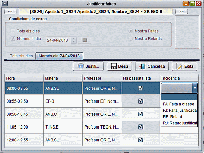

Mòdul de Fitxes-Tutoria
Justificar faltes
Des del mòdul de fitxes-tutoria es poden justificar faltes
d'assistència i retards.
Requereix que l'administrador hagi activat el plugin de
justificació de faltes.
Aneu a la barra de menú, aneu a tutoria/Justificar faltes.
S'obrirà aquesta pantalla
Seleccioneu el dia i premeu el botó Edita. Sobre la columna
incidència, seleccionau la incidència que voleu anotar a
cada hora.